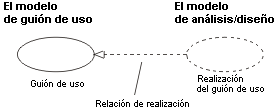
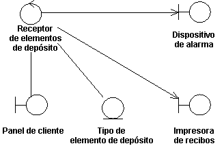

| Directriz: Ejecución de casos de uso |
 |
|
| Elementos relacionados |
|---|
IntroducciónUna ejecución de guiones de uso representa cómo un guión de uso se implementará en términos de objetos de colaboración. Este artefacto puede tener varias formas. Puede incluir, por ejemplo, una descripción textual (un documento), diagramas de clase de clases participantes y subsistemas, y diagramas de interacción (diagramas de comunicación y de secuencia) que ilustran el flujo de interacciones entre instancias de clase y de subsistema. En un modelo, una ejecución de guiones de uso se representa como colaboración UML que agrupa los diagramas y otras informaciones (como descripciones textuales) que forman parte de la ejecución de guiones de uso. La razón para separar la ejecución de guiones de uso de este guión de uso es que, de este modo, los guiones de uso se pueden gestionar separadamente de sus realizaciones. Esto es especialmente importante para proyectos grandes, o familias de sistemas donde los mismos guiones de uso se pueden diseñar diferentemente en diferentes productos dentro de la familia de productos. Imagine el caso de una familia de conmutadores telefónicos que tienen muchos guiones de uso en común, pero que se diseñan e implementan diferentemente de acuerdo con el posicionamiento del producto, el rendimiento y el precio. Para proyectos más grandes, separar el guión de uso y sus realizaciones permite cambios en el diseño del guión de uso sin afectar al propio guión de uso de línea de base. Para cada guión de uso en el modelo de guión de uso, existe una ejecución de guiones de uso en el modelo de análisis/diseño con una relación de realización al guión de uso. En el UML esto se muestra como una flecha de guiones, con una punta de flecha como una relación de generalización, que indica que una realización es un tipo de herencia, así como una dependencia (es decir, se podría haber mostrado como dependencia estereotipada con <<realizar>>).  Una ejecución de guiones de uso en el modelo de análisis/diseño se puede rastrear hasta un guión de uso en el modelo de guión de uso. Diagramas de clase propiedad de una ejecución de guiones de usoPara cada ejecución de guiones de uso puede haber uno o más diagramas de clase que ilustren sus clases participantes. La figura siguiente muestra un diagrama de clase para la ejecución del guión de uso Recibir elemento de depósito. Una clase y sus objetos suelen participar en varias ejecuciones de guiones de uso. Es importante durante el diseño coordinar todos los requisitos en una clase y sus objetos que diferentes ejecuciones de guiones de uso pueden tener.  El guión de uso Recibir elemento de depósito y su diagrama de clase. Diagramas de secuencia y de comunicación propiedad de una ejecución de guiones de usoPara cada ejecución de guiones de uso hay uno o más diagramas de interacción que ilustran sus objetos participantes y sus interacciones. Hay dos tipos de diagramas de interacción: diagramas de secuencia y diagramas de comunicación. Expresan una información similar, pero de modos diferentes. Los diagramas de secuencia muestran la secuencia explícita de mensajes y son mejores cuando es importante visualizar el orden de tiempo de los mensajes, mientras que los diagramas de comunicación muestran los enlaces de comunicación entre objetos y son mejores para comprender todos los efectos de un objeto determinado y para el diseño de algoritmos. Consulte los apartados Técnica: Diagrama de secuencias y Técnica: Diagrama de comunicación siguientes para obtener más información. |
© Copyright IBM Corp. 1987, 2006. Reservados todos los derechos. |